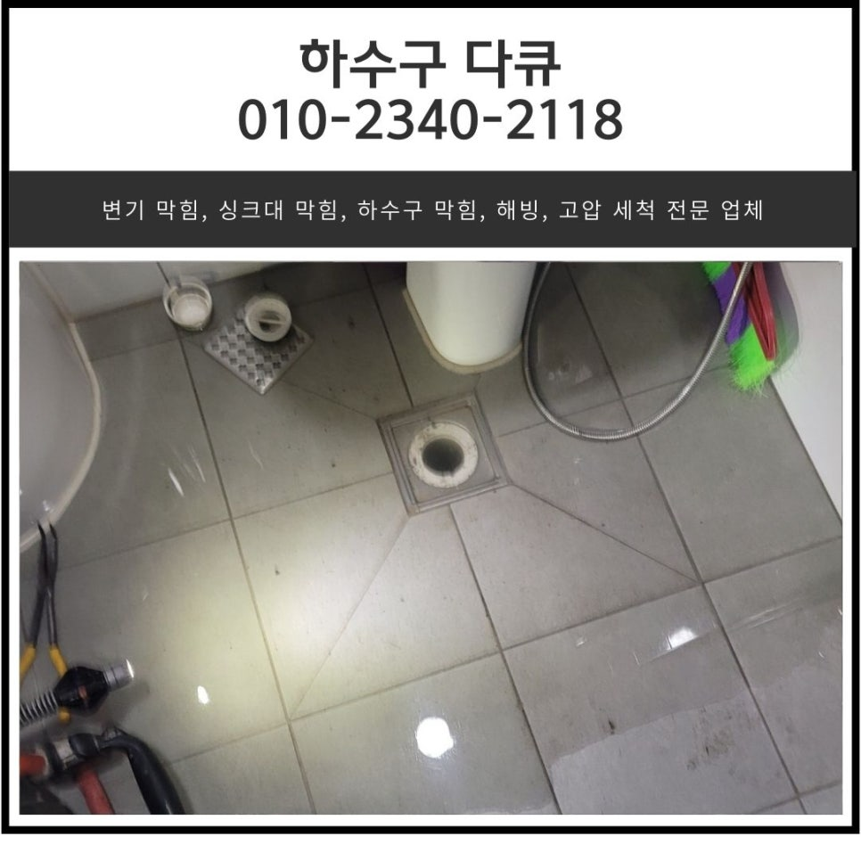
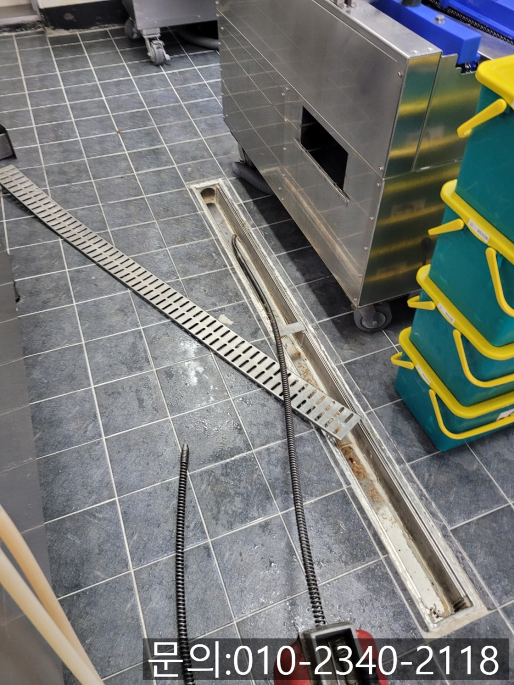
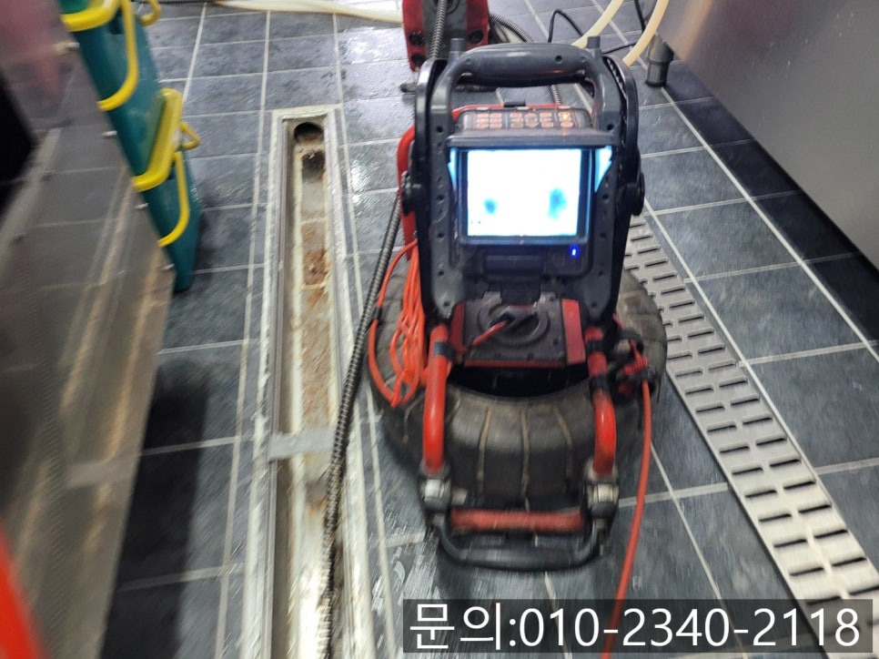
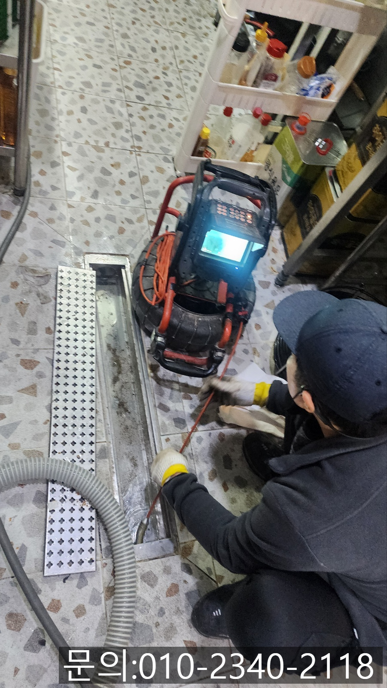
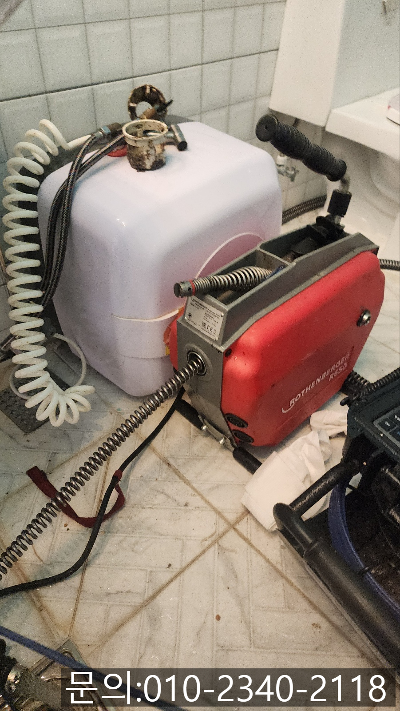
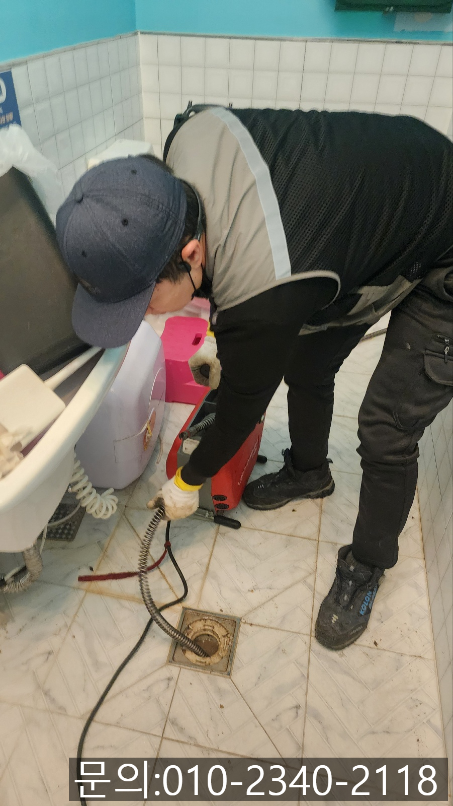
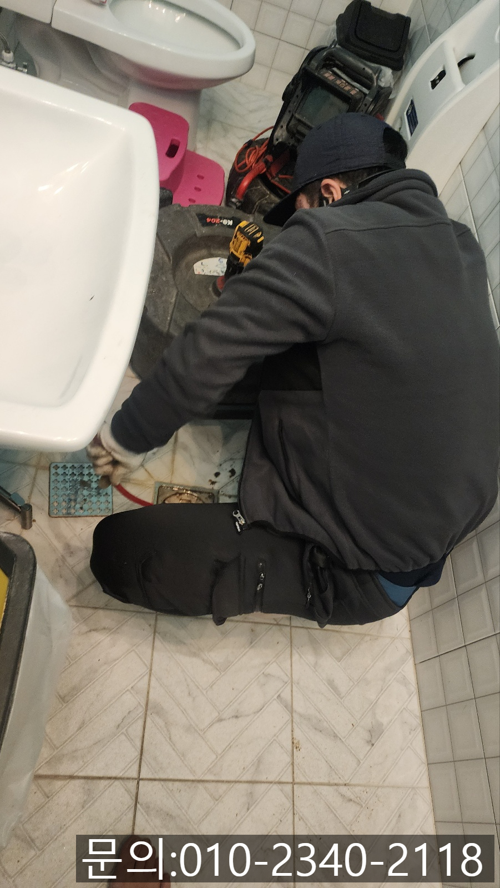

🏠 세마동 식당 주방 바닥 막힘 외삼미동 화장실 하수구 역류 고압세척
오산 세마동 하수구막힘 전문 시공 후기

📋 작업 개요
- 위치: 오산 세마동, 세마동, 오산
- 서비스 유형: 하수구막힘, 배관막힘, 맨홀막힘, 역류해결, 뚫는업체, 배관청소, 고압세척
- 작업 일시: 2025. 2. 8. 9:20
- 업체명: 하수구수사대 (010-5615-2118)
🔍 문제 상황
안녕하세요.
세마동 식당 주방 바닥 막힘, 외삼미동 화장실 하수구 역류 고압세척 업체 하수구 다큐입니다.
음식을 취급하는 식당 주방의 경우 재료를 손질하고 음식을 만들고, 손님들이 남긴 음식을 처리한다던가 식기를 세척하는 등 쉬지 않고 물을 사용하기 때문에 세마동 식당 주방 바닥 막힘이 발생하기 전에 배관의 상태를 체크해 주시는 게 좋습니다.
그렇지 않게 되면 식당을 운영하는 도중에 주방 바닥에서 물이 잘 내려가지 않거나 역류하는 등 세마동 식당 주방 바닥 막힘이 발생해 장사에 차질이 생길 수 있기 때문이에요.
특히 식당 주방의 경우 사람 심장처럼 중요한 역할을 하다 보니 하수구 막힘이 발생하게 되면 다양한 현장 경험을 통해 쌓인 노하우로 확실하게 뚫어주는 업체를 선택하셔야 합니다.
세마동에 위치한 한식 배달 전문 업체에서 다급하게 연락이 왔습니다.

🔎 원인 분석
💡 전문가 진단: 정밀 진단 장비를 사용하여 슬러지의 고착 여부를 판명하고 타격/세척 작업을 실시했습니다.
날씨가 추워지면서 배달을 시키는 손님들이 많아 제일 바쁠 시간인데 주방 바닥에서 물이 흘러내려 가지 않아 일하는데 방해가 된다며 빨리 방문해 뚫어달라고 요청하셨어요.
다행히 근처를 지나가던 중이라 전화를 끊고 거의 20분 만에 현장에 도착할 수 있었던 것 같습니다.
고객님께서 유선상 말씀해 주신 내용을 바탕으로 급하게 필요한 장비를 챙겨서 주방으로 들어가 보니 트랜치 배관에 물이 고여있는 것을 확인할 수 있었습니다.
트랜치 배관 안쪽으로 내시경 카메라를 진입시켜 막힘의 원인을 확인한 다음 우선 전동 스프링을 이용해 통수를 시켜 급한 불을 끄고 꼼꼼하게 확인해 보기로 했어요.
주방의 배관을 점검하고 있는데 고객님께서 급하게 찾으시더니 지금 화장실 바닥에서도 물이 역류하고 있다고 빨리 좀 봐달라고 하셨어요.
주방에서 사용하던 장비를 챙겨 화장실로 가보니 물이 역류하고 있는 상태로 내시경 검수하기 전에 전동 스프링을 사용해 통수를 진행했습니다.
주방 바닥에서도 물이 흘러가지 않고 정체하더니, 화장실 바닥에서도 물이 역류한다는 것은 건물 내부에서 사용한 물이 만나 흘러나가는 배관에 문제가 생긴 것 같았습니다.

🔧 작업 과정
우선 화장실 바닥에서 플렉스 샤프트 장비를 이용해 기름 슬러지와 각종 이물질을 제거했는데요.
이물질이 제거가 되면 배관 내부에 물이 고여있지 않고 빠져나가야 하는데 배관 내부에 물이 그대로 고여있는 것을 확인할 수 있었어요.
아무래도 더 깊은 곳에 다른 원인이 있는 것 같다고 예상되었습니다.
고객님께 주방과 화장실에서 동시에 하수구 막힘이 발생하는 이유에 대해 설명해 드리고 외부로 나가 맨홀을 열고 확인해 보기로 했습니다.
맨홀 깊은 곳에 있는 배관으로 장비를 집어넣는 게 쉽지 않다 보니 파이프를 이용해 길을 만들어 내시경 카메라를 진입시켜봤더니 역시나 기름 슬러지가 배관을 꽉 채우고 있는 상태였어요.
그러다 보니 화장실 바닥에서 이물질을 제거해도 물이 흘러가지 못 했던 것 같습니다.
외삼미동 화장실 하수구 역류 고압세척 전문 하수구 다큐는 건물의 배관 구조와 막힘의 원인을 말씀드리고 고압세척을 진행하기로 했어요.
고압세척의 경우 강력한 물줄기로 배관 내부에 쌓인 이물질을 밖으로 빼내주면서 물길을 뚫어 청소해 주는 방법으로, 이번 현장처럼 건물 여러 곳에서 문제가 발생했거나 배관의 크기가 큰 경우 빠르게 해결할 수 있는 방법입니다.
뿐만 아니라 배관 내부에 들러붙어있던 오염물들도 함께 밀어내는 동시에 이물질로 인해 발생하는 악취도 잡아줄 수 있답니다.
한참을 반복해서 고압세척 작업을 진행하자 엄청난 양의 기름 슬러지를 모두 제거하고 깨끗해진 배관 내부를 확인할 수 있었어요.
쭉 지켜보시던 고객님도 연락하자마자 방문해서 돌발 상황까지 잘 해결해 줘서 너무 고맙다고 식당에서 식사까지 대접해 주셔서 뿌듯했던 현장입니다.


✅ 작업 완료
지금 하수구 막힘으로 고민하고 계시나요?
외삼미동 화장실 하수구 역류 고압세척 전문 업체 하수구 다큐와 함께 해결해 보세요!
경기도 오산시 오산로160번길 15 201-L16호




⚠️ 하수구 배관 막힘 예방 및 관리 가이드
- ✅ 머리카락, 비닐, 물티슈 등 물에 분해되지 않는 이물질은 하수구 유입을 절대 금지해 주세요.
- ✅ 하수구 거름망을 씌우고 모여진 이물질은 주기적으로 쓰레기통에 바로 비워주셔야 합니다.
- ✅ 배관 노후가 심할 경우 이물질이 더 쉽게 걸리므로 주기적인 배관 세척(고압세척 등)을 권장합니다.
- ✅ 작업 후 1년 이내 재발 시 하수구수사대에서 무상 A/S 보증 서비스를 제공합니다.
💡 핵심 정리
- 확실한 장비 작업(내시경 점검 및 샤프트 스케일링)으로 원인을 뿌리 뽑습니다.
- 작업 후 1년 이내에 동일한 부위 재발 시 100% 무상 A/S 서비스를 보장합니다.
- 서울 · 경기 · 인천 전 지역에 24시간 언제든 긴급 출동할 수 있도록 항시 대기 중입니다.
❓ 자주 묻는 질문 (FAQ)
🚨 오산 세마동 하수구막힘 문제로 고민이신가요?
정확한 원인 진단과 확실한 시공으로 재발 없는 해결을 약속드립니다.
24시간 긴급 출동 | 서울 · 경기 · 인천 전지역 | 1년 내 재발 시 무상 A/S